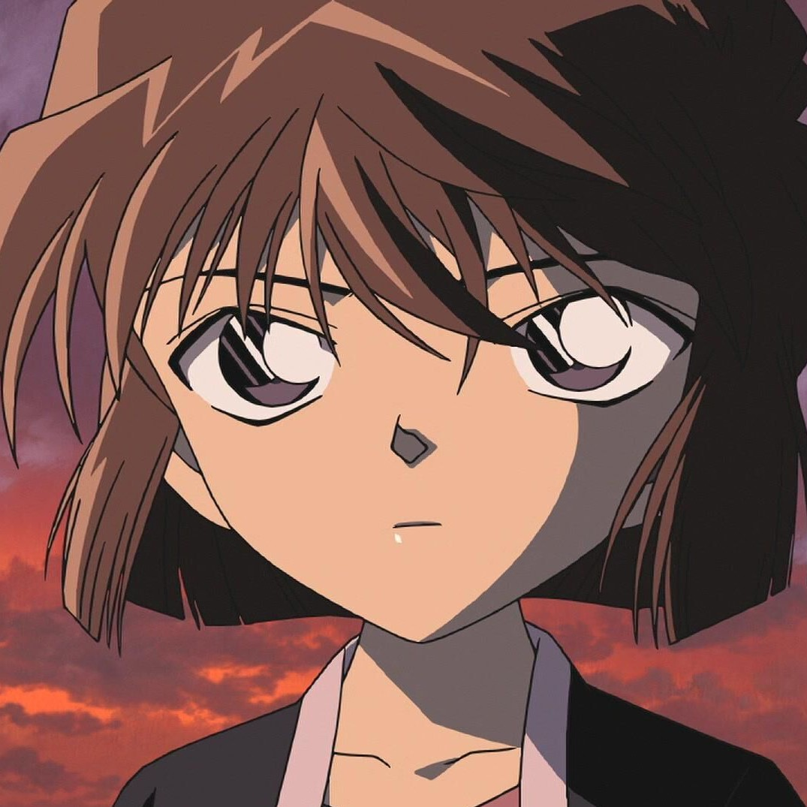
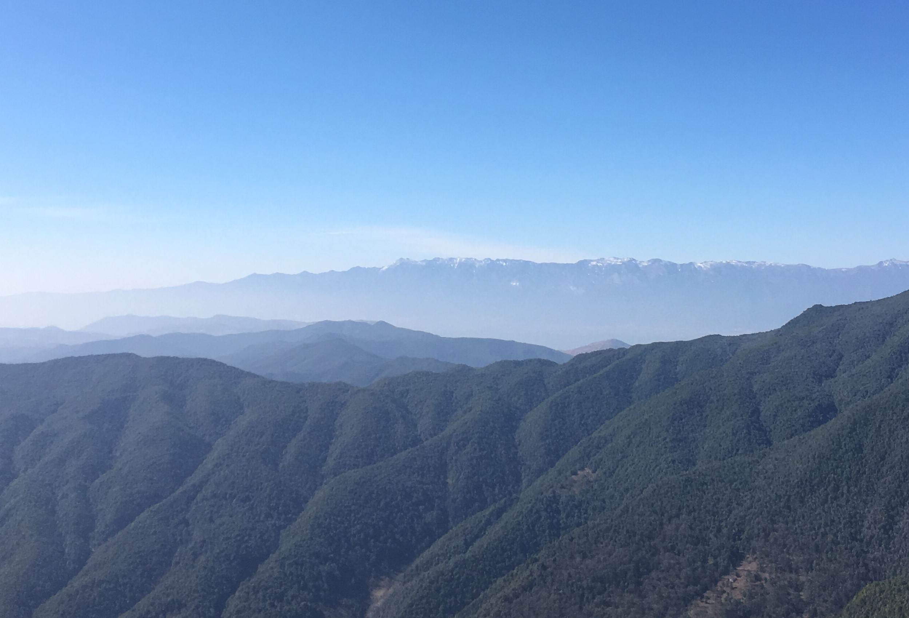
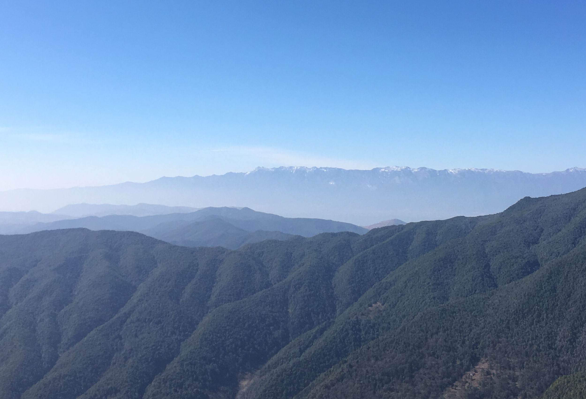

欢迎光临我的博客主页！
Welcome to my blog homepage!

关于我
出生地：云南大理
出生年月：2000年11月
学校：浙江传媒学院
二级学院：媒体工程学院
所在班级：软工2班
爱豆：陈伟霆&王一博
日志
眼见快要落到池中，沁骨提气轻身，轻点脚下的莲瓣，飞身落到石柱上。这柱子不似远望那般简单，像是因常年的踩踏，使柱子变得十分光滑，不易站稳，正欲施法站稳，却发现体内的灵力似乎被抑制住了，无论如何都唤不起分毫……想来这池底应是有什么阻碍灵力运转的阵法，这样能够影响人施法的强大阵法，究竟是谁设下的…… 忽感身后一道剑气袭来，沁骨侧过身，右脚悬空，身体向后倒去，躲开来人的桃木剑，左脚旋转带动身体，整个人又重新回到石柱上，白色的衣裙随着沁骨身体的转动飞扬，这白色的身影好似池中盛开的白莲……
还未站稳，又有数道剑影闪过，池中人多石柱少，想来自己站的地方是被盯上了，沁骨内心无力吐槽着，大脑飞速转动，思考该如何应对，桃木剑挥舞迅速，却敌不过来人太多，不知被哪位弟子的桃木剑挑了一下衣角，重心不稳，落入水中。沁骨浮上水面，看向岸边正凝眸盯着自己的姬衡翎。
姬衡翎动了动嘴唇，示意沁骨继续。沁骨抬头看了眼石柱，飞身踢了一脚石柱底部，翻向空中，虚踏一步，挥动手中的桃木剑朝石柱上的人刺去。一击不成，左脚便轻踩石柱边缘，借着向心力将身体甩回，桃木剑再次指向石柱上的人。沁骨手中的剑快速飞舞，看似乱无章法，实则打乱了对方周身的气流，扰乱其对剑气方向的判断，一击必中！
姬衡翎皱了皱眉头，侧过脸看了看不远处也在岸边观望的六长老，顺着他的目光看去，果不其然，后者也在看池中那一抹白色的身影。这白色的身影，在一众弟子红色的衣袍中，格外显眼……方才以为是自己看走了眼，如今看来，沁骨施展的必是“影莲舞”无疑，虽还未达到极致，但因这步法而残影渐渐形成莲花形的沁骨，倒颇有几分衡彬当年的样子，只是衡彬的莲影美得惊心动魄，而沁骨的莲影显现的更多是静美，许是着了白衣白裙的缘故吧……只是，将此秘术授予外人，这些长老们估计会有些恼怒了……接下来的日子，该有许多事要应付了……
发布于
作品
喜欢的作品
《边城》、《高老头》、《巴黎圣母院》
《盗墓笔记》、《沙海》、《藏海花》
《神探夏洛克》、《破产姐妹》、《欲望都市》
《斗罗大陆》、《魔道祖师》
相册
我眼中的云南
 
